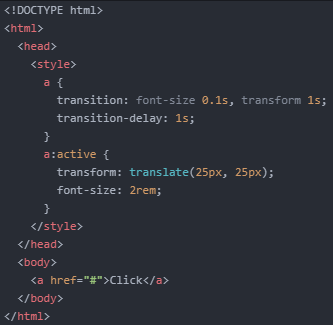
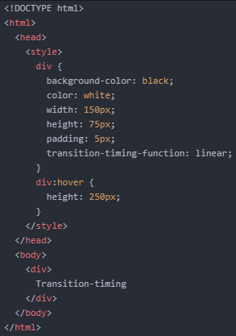
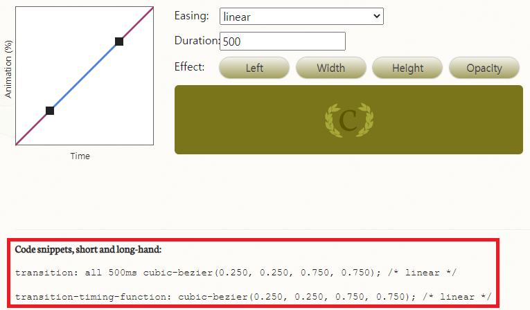
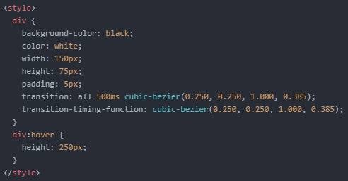

- Transition에 대해 알아보기 2
오늘도 어제에 이어서 Transition에 대해 더 알아보겠습니다.
어제는 'property'와 'duration'을 활용했었습니다.
그리고 오늘은 나머지 두 속성인 'delay', 'timing-function'에 대해 알아보겠습니다.
그럼 'delay' 부터 예를 들어보겠습니다.
다음과 같이 코드를 작성합니다.
Click을 누르고 있으면 1초 후에 효과가 적용되는 것을 알 수 있습니다.
이번에는 'timing-function'입니다.
이 기능을 이용하면 효과가 적용되는 시간을 조절할 수 있게 됩니다.
'timing-function'은 여러가지 속성값을 가지고 있습니다.
우선 우측의 링크를 통해 'timing-function' 효과를 직접 확인해보세요. 클릭!
그럼 이 기능을 이용해보겠습니다..
다음과 같은 코드를 작성합니다.
저는 'linear' 속성값을 이용했습니다.
마우스 커서를 가져다 대보면 해당 효과가 적용된 것을 알 수 있습니다.
이번에는 미리 만들어져 있는 'linear'와 같은 속성값을 이용하지 않고 직접 시간을 조절해보겠습니다.
이때 사용하는 속성이 'transition-timing-function: cubic-bezier()' 입니다.
다만 이 속성을 이용하는 것은 아직 어렵기 때문에 위 사이트가 제공해주는 코드를 이용하겠습니다.
해당 사이트를 보시면 효과를 선택할 때마다 빨간 상자 안의 코드가 바뀌는 것을 알 수 있습니다.
직접 그래프를 조작하여 원하는 효과를 만들어준 뒤에 해당 코드를 복사합니다.
그리고 다음과 같이 코드를 작성합니다.
그럼 위와 같이 원하는 속도로 효과를 적용할 수 있게 됩니다.
오늘은 여기까지 하겠습니다.
내일도 화이팅!